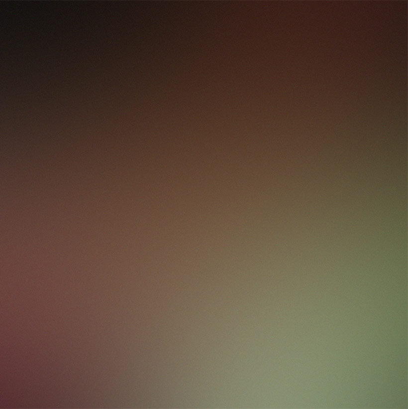

Rita Macis
Artista visiva — questo sito è la mia vetrina/copertina. Qui trovi una selezione dei miei lavori, una breve bio e i contatti.
Artista visiva — questo sito è la mia vetrina/copertina. Qui trovi una selezione dei miei lavori, una breve bio e i contatti.
Ricerca materica tra pittura, installazione e mixed media. La mia pratica indaga memoria, stratificazione e luce, con un'attenzione alla relazione tra spazio e superficie.
Rita Macis è un'artista visiva. Vive e lavora in Italia. La ricerca si concentra su [temi/concetti] sviluppati attraverso [tecniche/medium]. Questo sito funziona come vetrina/copertina dei lavori in corso e delle serie recenti.
Mostre selezionate
2025 — [Titolo mostra], [Spazio/Galleria] — [Città]
2024 — [Titolo mostra], [Istituzione] — [Città]
Alcune opere recenti. Clicca sulle anteprime per aprire le immagini.


Per proposte, mostre e press: info@ritamacis.art
Anteprima con i file già presenti.
